Alappuzha Kerala
Alappuzha is often referred to as the "Venice of the East" due to its intricate network of backwaters, lagoons, and canals. The backwaters are a unique ecosystem and a major attraction for tourists. Houseboats and traditional Kettuvallams offer a tranquil way to explore the scenic waterways.


 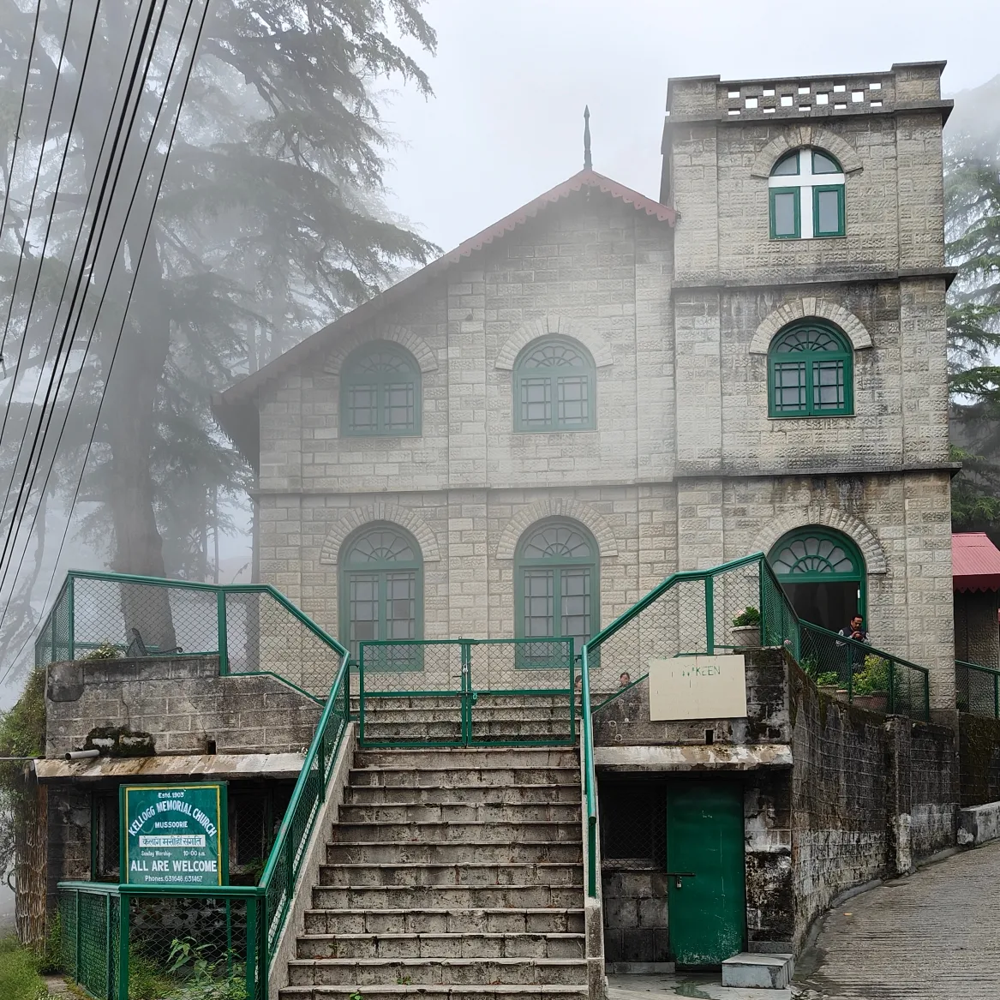
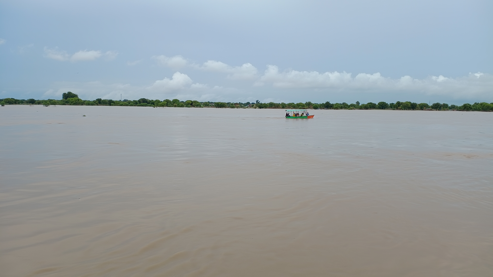
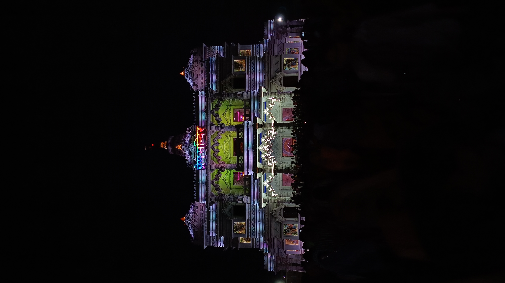
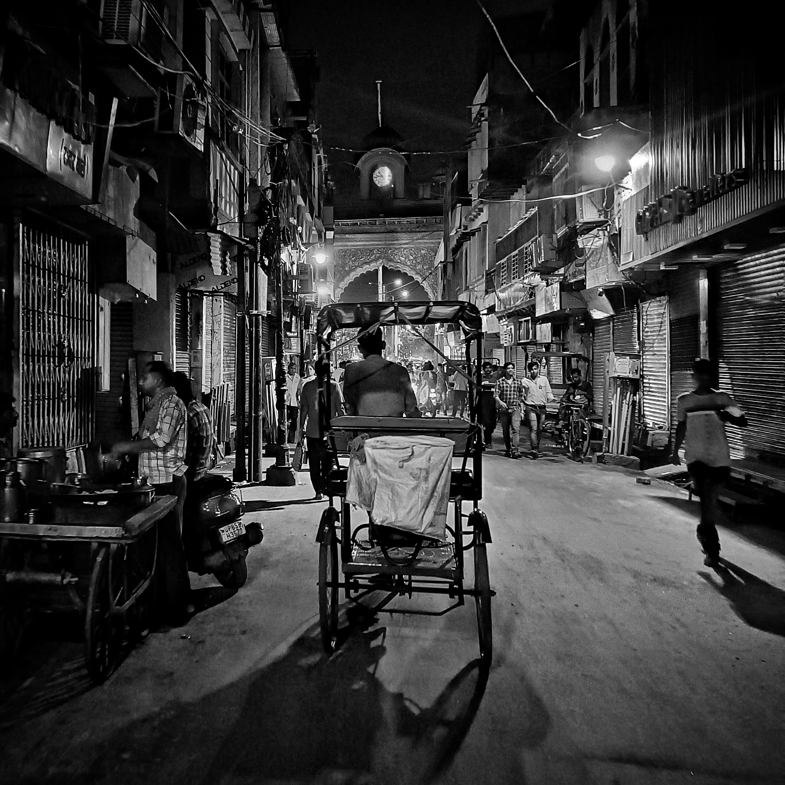
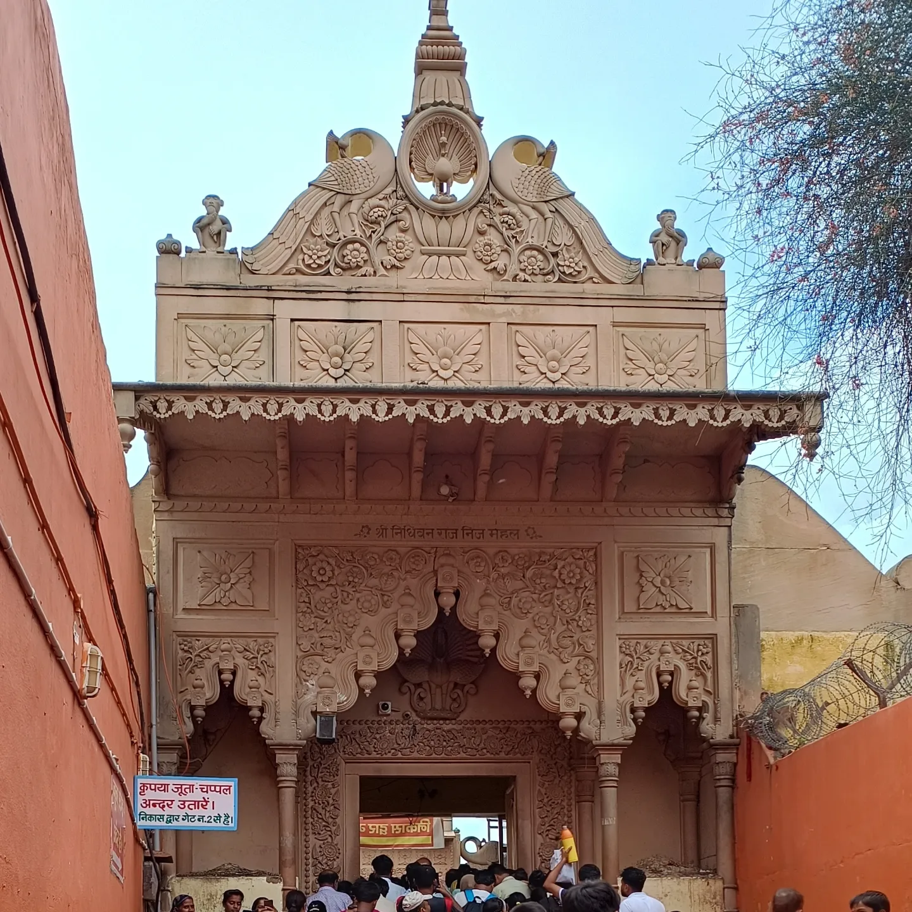
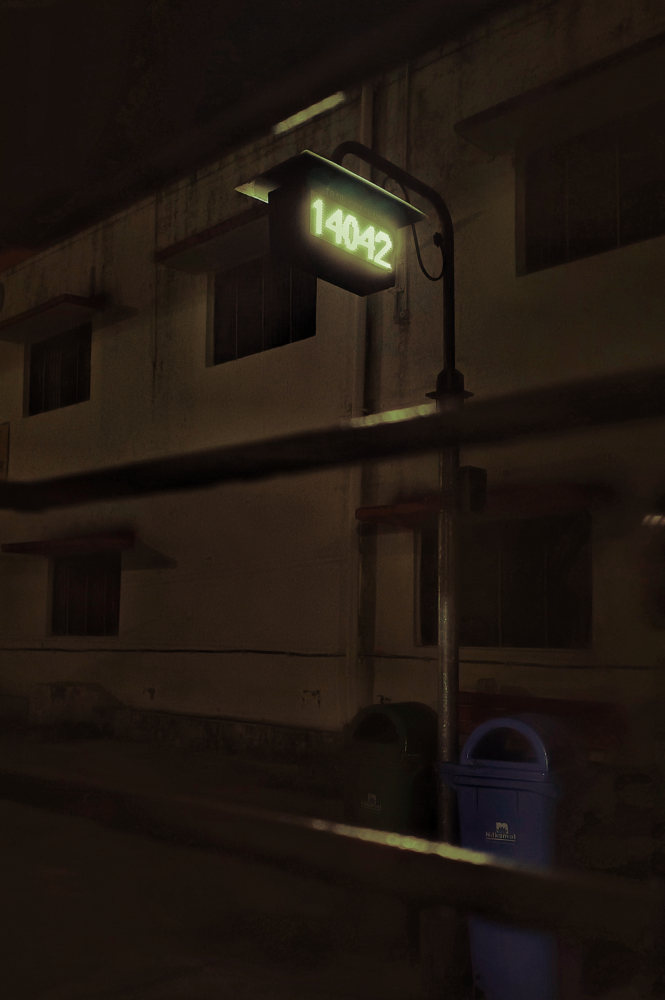
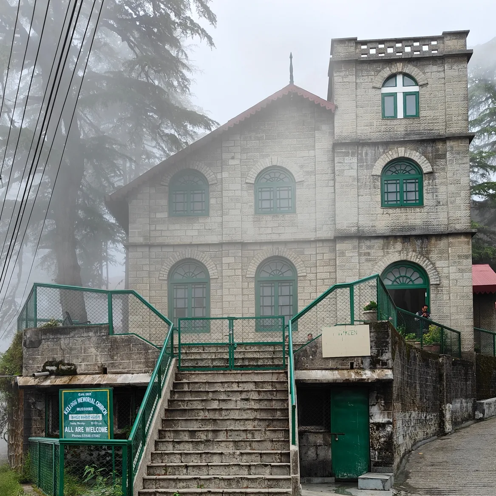
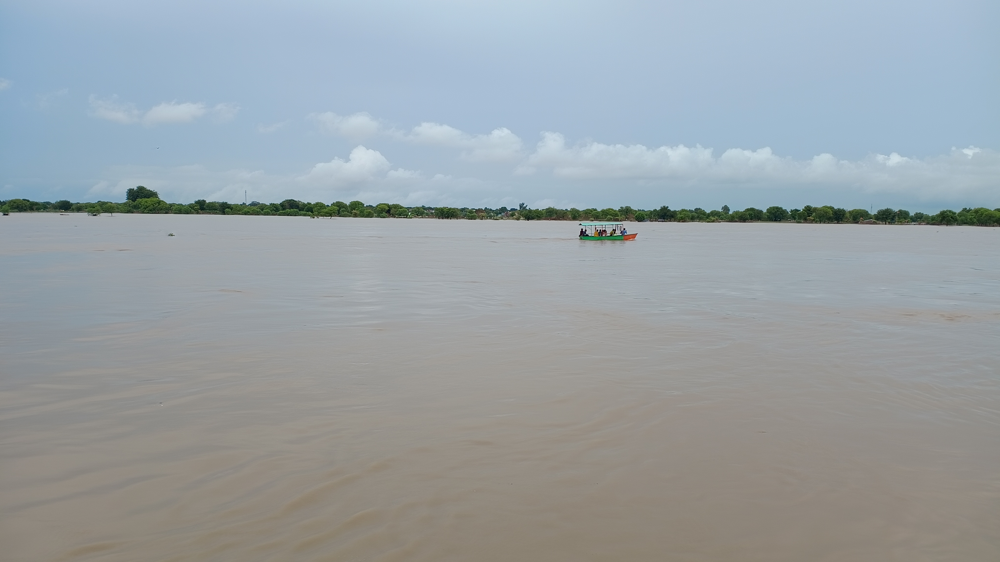
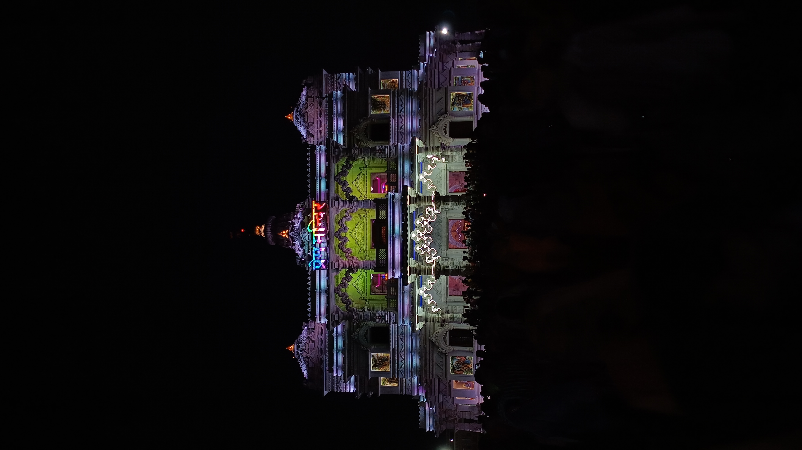
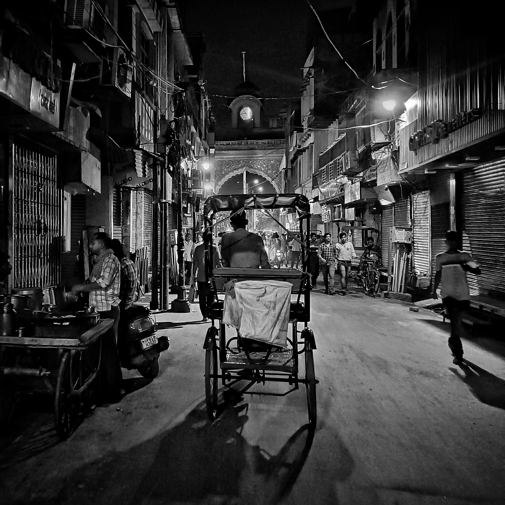
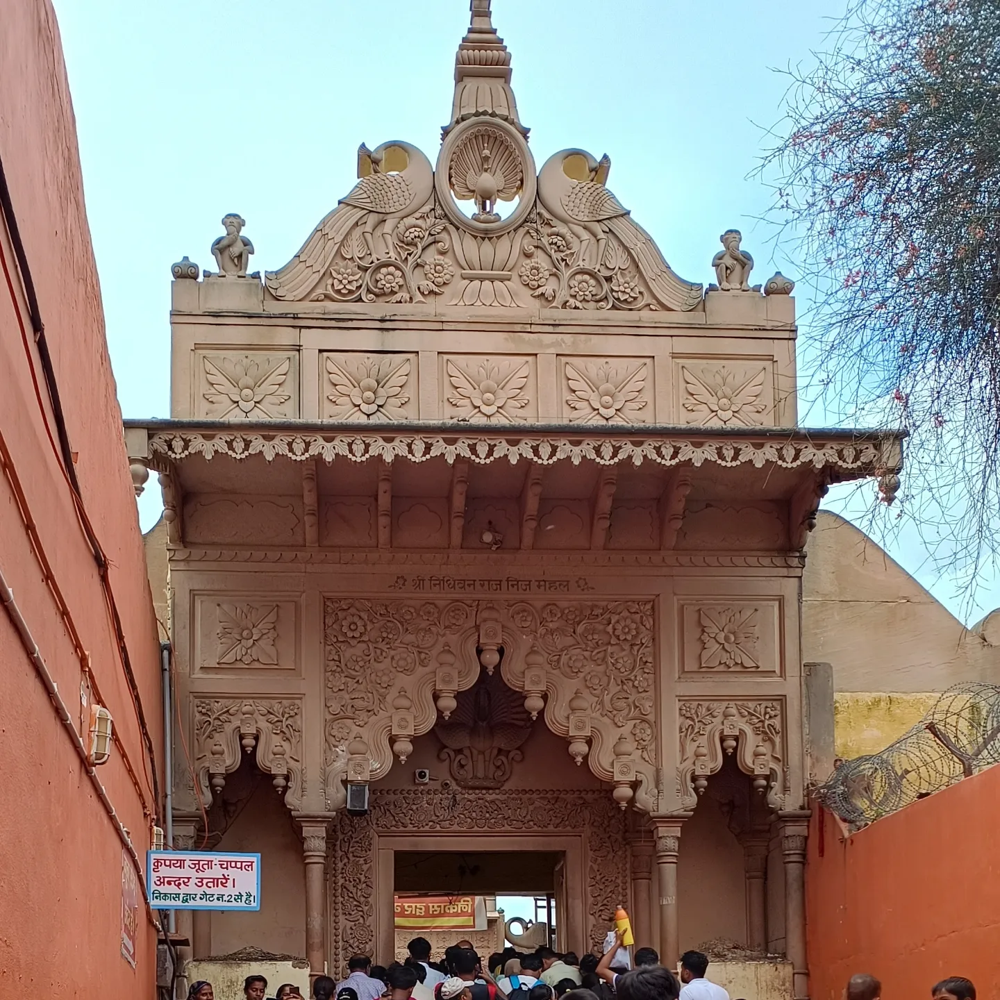
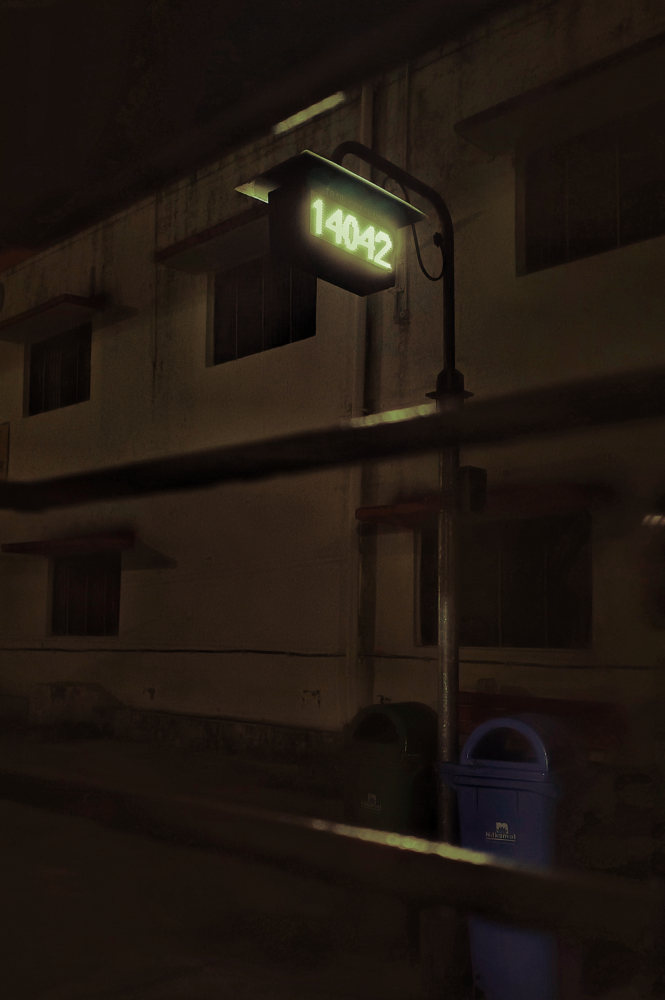